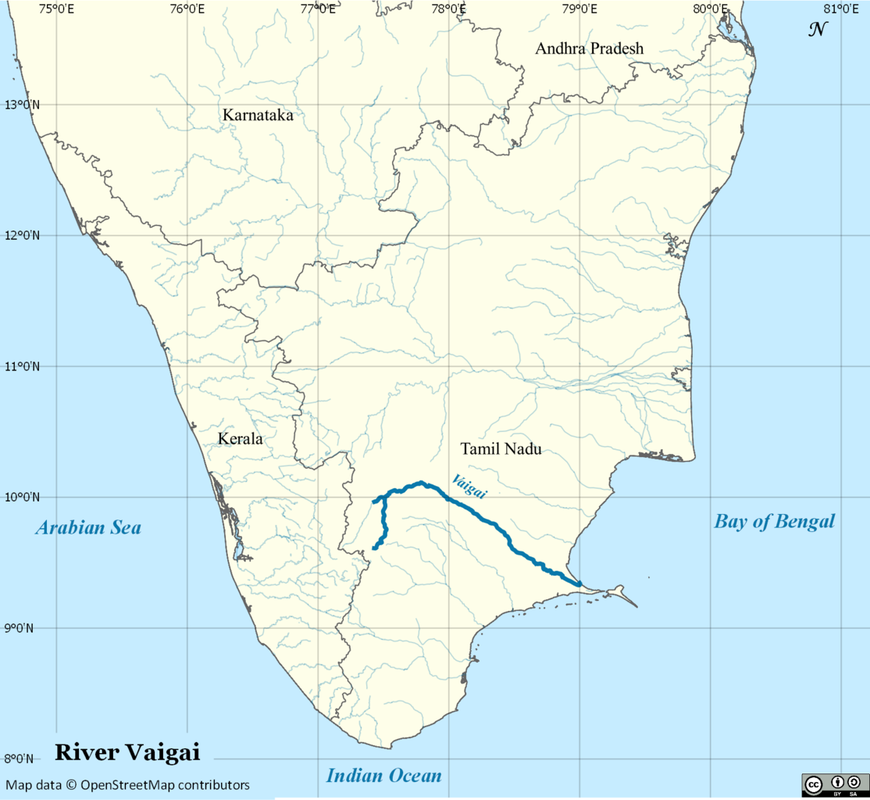

|
Beowulf’s Pagan and Christian Elements: Beowulf, an epic narrative poem, is a reflection of many Anglo-Saxon ideals and concepts. This work was written in the time when the society was in the process of converting from Paganism to Christianity. One can frequently see themes such as fate, fame and revenge which are strong Pagan beliefs. Yet amid these themes are references to Cain and the flood from old testament and praying to God and a savior though there is no direct reference to Christ, angles or saints. According to George Clark states, Beowulf is a Christian reworking of a pagan poem with “a string of pagan lays edited by monks”. Suffice it to say that the resulting Beowulf is like a pagan story wrapped in Christianity.
Main two antagonists of the tale, Grendel and his mother are introduced as the descendants of Cain, a character of old testament. Cain is the biblical son of Adam of Eve, the first people on the Earth. Cain was jealous of his brother Abel, so “Cain rose up against his brother Abel and slew him” (Genesis 4.8). When God discovered this, Cain was then cursed, “fugitive and vagabond shalt thou be upon the earth” (Genesis 4.12). The belief is that the descendants of Cain are monsters and ''ill-favored creatures.'' The creature Grendel had ''dwelt for a time/ in misery among the banished monsters,/ Cain's clan.'' Another such fusion is to be found on the sword hilt depicting the annihilation of the giants through the Flood as seen in the story of Noah, Genesis 6.9 – 6.17. Hrothgar ''examined the hilt, the relic of old times. It was engraved all over and showed how war first came into the world and the flood destroyed the tribe of giants. They suffered a terrible severance from the Lord; the Almighty made the waters rise, drowned them in the deluge for retribution.'' Throughout the story of Beowulf, one finds many elements of Christian philosophy: that man survives only through the protection of God, that all earthly gifts flow from God, and that the proper bearing of man is to be humble and unselfish. Christian terminology is found in the speeches of various characters throughout the poem even regarding the final burial of Beowulf himself; “then let us bring the body of our lord, the man we loved, to where he will lodge for a long time in the care of the Almighty.” The hero depends on the attributes God has embodied in him, his physical abilities and prowess; “Beowulf was mindful of his mighty strength, the wondrous gifts God had showered on him”. In the relation of his fights, Beowulf always acknowledges the powerful influence of God, both favourable and adverse. When Beowulf relates his battle with Grendel's mother, he states that "The fight would have ended straightaway if God had not guarded me". Further exemplified by the powerfully stated "most often He has guided the man without friends". Hrothgar states that Beowulf's killing of Grendel was achieved with the help of God; “First and foremost, let the Almighty Father be thanked for this sight, The Heavenly Shepherd can work His wonders always and everywhere.” However, there is also a strong sense that God's protection must be earned; a warrior must first be true to his values, courage, honesty, pride, and humility and only then will he earn God's protection. In addition to earthly protection, there is also the sense that all earthly good, be it success or wealth, derives from God. For example, when about to fight Grendel's mother in her cave, Beowulf sees a great weapon hanging on the wall. But he does not take credit for this perception. The credit is given to God: "But the Wielder of Men granted me that I should see hanging on the wall a fair, ancient great-sword". And later in the passage, Hrothgar tells Beowulf that even the status of king is achieved through the grace of God, "It is a wonder to say how in His great spirit God gives wisdom to mankind, land and earlship. He possesses power over all things.” Various characters in the poem perceive God’s will as being a direct result of their own actions, and it is therefore that both Hrothgar as well as Beowulf ponder over a reason for incurring the Lord’s wrath when they are afflicted by a supernatural menace; “the wise man thought he must have thwarted ancient ordinance of the eternal Lord, broken his commandment.” There are many pagan beliefs and practices present in the poem. Some of them are- the belief in wyrd, revenge, the use of special swords, the practices of ship burial and cremation, and ritualized offerings. Wryd, akin to Fate, is another pagan concept that plays a role in the story of Beowulf. In Norse pagan and other ancient belief systems, wyrd was considered an inescapable and destined path through life and everybody must “fell as fate ordained”. The narrator remarks, “Fate goes ever as fate must” .Beowulf, when discussing his battle with Grendel, remarks that it was wyrd. It is later mentioned when Beowulf fights the dragon, which leads to his own demise because he went against wyrd, or his destined path. At another point of the story, Beowulf states that "fate, the master of us all, must decide this issue”. He resigns to fate, which is a pagan concept, but he makes no mention of God. The Pagan belief is more focused on the reputation and fame of earthly life and fame was the only way to immortalize one’s name. To Beowulf and the other characters of the story, to be famous is to have great prowess and to accomplish heroic tasks. The character Beowulf himself states "let him who can win fame before death, because that is a dead man's best memorial". This statement illustrates how important the concept of fame was to Beowulf, who is a representative character. Beowulf has decided that he will either accomplish this goal or die in the attempt. When Beowulf accomplishes this task and mortally wounds Grendel, he has shown both his prowess and a great degree of heroism. Hrothgar tells Beowulf that "by exploits established fame forever" The pagan concept of vengeance is also found in Beowulf. While Grendels mother acts out of pure revenge for her dying son, Grendel himself, who may appear vengeful, is truly acting out of jealousy and a sense of resentment towards people happier than him. The dragon also acts out of a sense of vengeance, but its actions are ultimately used to create a fateful deathbed for Beowulf. Beowulf also justifies his revenge by saying, “It is always better / to avenge dear ones than to indulge in mourning.” Another pagan element in Beowulf is the use of special swords. Beowulf's sword, named Hrunting, is described as inscribed with symbols, which in and of itself is not unusual. Many special swords were carved with runes for protection, blessings, and victory, as well as with prayers or invocations to the Norse gods. In addition, a warrior's sword was sacred and treated almost as a living thing, given great respect not only by the warrior but by those in the warrior's community as well. The importance placed on Hrunting, and later on the giant's sword used by Beowulf to kill Grendel's mother, indicates a pagan mindset regarding the swords. The ship burial in Beowulf is a pagan practice found in Anglo-Saxon and Nordic areas during the time period of the story. The Danes and the Geats nations practice crematory rituals as can be seen in the funeral pyres of the former Danish King Scyld Shefing and of Beowulf himself; “Then the Geat people began to construct/ a mound o headland” Beowulf's last request to Hrothgar, to replace him and to be the ring-giver for his retainers, is one of the examples of paganism in this culture. In Anglo-Saxon England it was very important to fulfill the last request of a warrior, who was willing to die for one. Beowulf's taking of the monster's head is a pagan element, representing a release of the evil spirit and is also a proof of hero's strength and victory. It can be concluded that perhaps a Christian author wrote Beowulf for a Christian audience. The author reconciled such pagan concepts as fame, fate, and vengeance, which are found throughout the narrative, with Christianity. He did this to show the way in which both pagan concepts and Christianity were interrelated. It is evident therefore, that while many pagan influences appear in the poem, Christian overtones dominate and many of the characters exhibit patent Christian characteristics. Discuss Beowulf as an epic: "Beowulf" is the oldest piece of English literature and is credited with being a quintessential piece of epic poetry. This epic poem was originally performed in the oral tradition by wandering minstrels called scopes until it was transcribed between 700 to 900 A.D. by an unknown author. The purpose of these oral tales was to record historical events, tracking the exploits of a larger-than-life hero who embodied national ideals while utilizing various themes and literary elements unique to the culture and genre. An epic is a long narrative poem in elevated style that relates the great deeds of a larger-than-life hero who embodies the values of a particular society. The epic celebrates virtues of national, military, religious, cultural, political, or historical significance. The word "epic" itself comes from the Greek epos, originally meaning "word" but later "oration" or "song. Most epics share standard characteristics and formulas known as epic conventions. Following is a short discussion about how Beowulf contains epic conventions. Unlike lyric poems, which can be short reflections on a single object or person, epic poems are quite long - often the length of a novel - and they present a narrative or story that features many objects and characters. Generally, epics are also mythologized histories or at least loosely based around historical or quasi-historical characters or events or characters. “Beowulf” contains more than 3,000 lines, and more than 30 characters. The lengthy poem tells the complicated story of the eponymous hero Beowulf’s battle with Grendel, Grendel’s mother and a dragon. “Beowulf” includes epic lists of the hero’s lineage as well as the regions over which his kingdom has dominion. In an epic poet remains objective and omniscient. The narrator sees and knows all and presents all perspectives. The narrative voice in Beowulf is omnipotent and the narrator describes the events from an objective pint of view. Epics usually have overly formal, highly stylized (poetry, lyricism (singing), exaggeration). In Beowulf every action and event is narrated in a high grandeur style. Additionally, there are several lengthy speeches made by Beowulf, Hrothgar and many others. There also are several “narrative” speeches in which the narrator reflects on the theme or meaning of the narrative action in the poem. The majority of these latter speeches occur between Beowulf’s defeat of Grendel and his battle with the dragon 50 years later that result in his fatal wounding. An epic poem is often “encyclopedic,” in the sense that the poem reflects an enormous number of different aspects of the culture from which it springs. Beowulf, the title character, represents the values of the heroic age, specifically the Germanic code of comitatus — the honor system that existed in Scandinavian countries in the fifth and sixth centuries between a king, or feudal lord, and his warriors (thanes). Thanes swore devotion to their leader and vowed to fight boldly, to the death if necessary, for him. If the leader should fall, his thanes must avenge his life. For his part, the leader rewarded his thanes with treasure, protection, and land. His generosity often was considered a virtue and a mark of character. Courage, loyalty, and reputation were other virtues for these warriors, and we can look for them as themes in the poem. The code of the comitatus is at the heart of the Beowulf epic. Epics often focus on single heroic figures. Usually the epic hero is born into royalty, leaves family or land and lives with others. Beowulf is from a royal descendent. He is the son of Ecgtheow and nephew and thane of the Geat king, Hygelac. He leaves his homeland Geatland and goes to Dane to rescue the Danish king Hrothgar from Grendel, the monster. He also becomes the king of Geatland after the death of Hygelac. Action in epics often involves a battle or multiple battles. There is presence of supernatural beings (monsters, demons, non-human enemies etc.).The epic hero or protagonist is often on a journey and possesses almost god-like characteristics. The hero must prove himself many times while on adventure. Beowulf exhibits these qualities in the Old English epic poem named after him. His heroic qualities were courage, loyalty, wisdom, boasting, and physical strength. A hero of the Geat’s, Beowulf renders aid to the King of the Danes, Hrothgar. Beowulf heroically slays Grendel and becomes the target of his mother. Beowulf again succeeds in battle and then returns to Geatland, his home. Epic represents moral ideals and taboos in the behavior of the hero and antagonist. The hero's behavior and the lessons he learns along the way represent the culture's ideals; what the hero does, all men should strive toward. In his quest to assist the Danes, Beowulf exhibits bravery, physical strength and mental cunning when battling monsters, which makes him appear superhuman and far superior to the average man. His loyalty and generosity toward his subjects -- the Thanes -- and kingdom of Geatland were paramount to the Anglo-Saxon culture as a model of leadership. Beowulf is willing to put himself in danger. Lines 73-4 in Section III explain his motivation: "Living his life-days, his Lord may face, And find defense in his Father’s embrace!" Fifty years after his defeat of Grendel’s mother, Beowulf must protect his people from a marauding dragon that is destroying the countryside because a thief stole a golden cup from its lair. Although Beowulf is successful in defeating the dragon, he is mortally wounded in the battle. The poem concludes with Beowulf’s burial. Beowulf, however, differs from the classic epics of ancient Greece as it does not open with an invocation to a Muse, and it does not start “in medias res” or in the middle of things. However, Beowulf can still be consider as a prime example of a literary epic, as it focuses on the heroic quest of its title character, Beowulf, a Scandinavian warrior. The key aspects that make “Beowulf” an excellent example of an epic poem relate to his narrative, length, some of the common “epic” devices it uses, and its description of magic and mystical characters and creatures. Beowulf - An elegy: Beowulf the poem can be considered an elegy, though more an elegy for a civilization or a way of being in the world/a world-view than an elegy for a single man. An elegiac tone is one of lamentation, which in "Beowulf" is typically of an allegorical nature; that is, deaths are lamented for their symbolic significance as well as for the loss of the individuals concerned. A good example of this comes at the end of the story when Beowulf slays the dragon. The creature is mourned with elegiac references to its magnificent grace, which would never again "glitter and glide," even while the loss is also an allegory for the passing of an era and of Beowulf's own death, his greatness having been spent. This elegiac sense of fate and the inevitable passing away of things permeates "Beowulf." Despite the virtue and heroism of his confrontation with the dragon, even this event carries with it the doom of his people, since Beowulf knew he would not survive it. Thus, the celebration of Beowulf's heroic act against the dragon is also elegiac, lamenting not only the lost hero himself but also the inevitable loss of the kingdom he left behind. The setting of "Beowulf" is a world in which kingdoms are under constant threat of invasion, which would have been offset by a feared and mighty king such as Beowulf. For this reason, Wiglaf comes to think of Beowulf's actions as lamentable, even while they may have been unavoidable. Book page 109… Themes of revenge: Revenge is a common theme in literature, not just because of its primal nature, but because it takes on the form of retributive justice. Revenge is central to the warrior culture described in Beowulf. In particular, revenge was usually taken through what was called a "blood-feud," which involved warriors fighting against those who had killed their kinsman, lord, or king. Revenge is prevalent as a motivating factor for many of the characters in Beowulf. In this poem are Grendel is angered and seeks revenge, Grendel's mother lash out as only a mother can, the dragon aslo seeks revenge for his lost treasure and Beowulf seeks revenge against Grendel, his mother and the fire breathing dragon to save Dane and Geatland. In the beginning of the poem we are introduced to Grendel, “A powerful monster, living down/ In the darkness, growled in pain, impatient”. He hates “Heorot” because it represents everything he finds repulsive in mankind. He hates the Danes' singing, their joy, the fact that God has favored them. For twelve years he makes his presence known, making mead hall uninhabitable. Grendel is determined to make the Danes pay for their misdeeds and their love of life. He is successful until Beowulf comes on the scene to rid the hall of Grendel once and for all. “The warrior determined to take revenge / For every gross act Grendel had committed.” In the battle between Grendel and Beowulf, the monster is mortally wounded. He manages to flee, but does not survive. “'Beowulf had been granted new glory: Grendel escaped,/ But wounded … Only to die, to wait for the end.” Once Grendel is dead, the Danes have their revenge for the pain and humiliation Grendel caused by making the mead hall uninhabitable for so many years. The men are now able to return to their hall without fear. But this joy of getting rid from this monster only lasts for one day. The narrator tells us, 'But now his mother / Had sallied forth on a savage journey, / Grief-racked and ravenous, desperate for revenge.' Grendel's mother is enraged and preparing to lash out in response to her son's fatal injuries. Grendel’s mother “has taken up the feud/ because of last night, when you killed Grendel”. Her anger over the death of Grendel is immense and it fills her with the need for revenge. She is determined to bring all of her wrath down on the heads of those who have hurt her. She takes her anger and need for revenge into mead hall. She comes into the hall determined to inflict as much pain as she feels. Her rage knew no bounds. As she terrorized the mead hall, the men quaked in fear and did their best to run from her. When she entered intent on wreaking havoc, the men scattered and scampered for a place to hide from her vengeance. This did not deter her in the least. She was undaunted in her task to seek revenge for the death of her son. Her first act is to kill one of the Danes, “Hrothgar's closest friend”, Aeschere and take his body to her “moor”. Beowulf himself best describes the sense of revenge in the poem. He consoles Hrothgar for Aeschere’s death by saying, “Wise sir, do not grieve. It is always better / to avenge dear ones than to indulge in mourning.” Beowulf alone goes down in her moor to kill her and take revenge for Aeschere’s death. Fifty years later after Grendel’s death Beowulf’s kingdom, Geatland was attacked by a Dragon. Beowulf’s men had been raiding the treasure hoards of the dragon, which sent him into a rage of fire and destruction. The dragons only purpose was to defend his riches, and when he failed at that mission violence was the natural retribution. When Beowulf learns that his own home, / had been burned to a cinder, he decides that the time has come for the defender of the Geats to face this beast. “So war king planned and plotted his revenge”. In his fight with the dragon, Beowulfs actions lie in the hands of fate, the final requirement of the Heroic Code. While the dragon acts out of unadulterated revenge, Beowulf seeks out the duel with the dragon in order to fulfill his destiny. The author of Beowulf uses the dragons act of vengeance to create the pivotal scene in which Beowulf meets his demise; the settlement of his destiny. While Grendels mother acts out of pure revenge for her dying son, Grendel himself, who may appear vengeful, is truly acting out of jealousy and a sense of resentment towards people happier than him. The dragon also acts out of a sense of vengeance, but its actions are ultimately used to create a fateful deathbed for Beowulf. Beowulf also justifies his revenge by saying, “It is always better / to avenge dear ones than to indulge in mourning.” Clearly, revenge is a theme that permeates nearly every aspect of Beowulf. It is used throughout the poem both as a source of violence, and a cover-up for more selfish motives. The relationship between vengeance and heroism causes a repeating pattern of behavior within Beowulf. Themes in Beowulf: A theme in a literary work is a recurring, unifying subject or idea, a motif that allows us to understand more deeply the character and their world. In Beowulf, the major themes reflect the values and the motivations of the characters. The driving force in Beowulf is the theme of heroism, loyalty, revenge, envy, reputation, identity, man v/s monster, Christian and pagan believes in life etc. Heroism: The main theme of Beowulf is heroism. This involves far more than physical courage. It also means that the warrior must fulfil his obligations to the group of which he is a key member. There is a clear-cut network of social duties depicted in the poem. The king has an obligation to behave with generosity. He must reward his thanes with valuable gifts for their defense of the tribe and their success in battle. This is why King Hrothgar is known as the "ring-giver." King’s thanes have their obligations too. A thane is a warrior who has been rewarded by his king with a gift of land. They must show undivided loyalty to their lord. Only in this way can the society survive, because the world depicted in Beowulf is a ruthless and dangerous one. The warriors must be prepared for battle at all times. Beowulf is the greatest of the heroes depicted in the poem not only because he has the greatest prowess in battle. He also perfectly fulfills his social obligations. He has the virtues of a civilized man, as well as the strength of the warrior. He looks after his people and is always gracious and kind. “Thus Beowulf bore himself with valor; he was formidable in battle yet behaved with honourand and took no advantage; … kept his temper … watched and controlled his God-sent strength and his outstanding natural powers.” (lines 2177-83) Blood-Feuds: Although Beowulf is in some respects a Christian poem, its social code emphasizes justice rather than mercy. The code of the warrior society is a simple but harsh one. It is blood for blood. If there is killing, the clan that has suffered must exact revenge. Since feuds between different clans break out regularly, the effect is to create a never-ending process of retaliation. It is this, just as much as the presence of the monsters, that gives the poem its dark atmosphere. With Beowulf their protector gone, the Geats fear that old feuds with the Swedes will be resumed, and they will be the worse for it. Various blood-feuds in the past are alluded to many times in the poem. The most vivid description is contained in the long section (lines 1070-1157) in which the minstrel sings of the saga of Finn and his sons, which is about a feud between the Frisians and the Danes. Christian and Pagan believes: There are many references in the poem to the Christian belief in one almighty God who takes a personal interest in human affairs. Beowulf and Hrothgar give praise to God for the defeat of Grendel. The outcome of battles is attributed to the judgment of God, and Beowulf puts his trust in God. The scriptural references, however, are restricted to the Old Testament rather than the New. The story of Cain and Abel is mentioned, for example, in explaining the origins of Grendel. And the sword hilt of Grendel's mother is engraved with a depiction of the Flood described in the book of Genesis. But Beowulf makes no mention at all of Christ, or an afterlife in heaven for the believer. The burial rites described, in which warriors are buried with their treasure, does not suggest belief in a Christian heaven, rather it’s a custom of pagans. The atmosphere of much of Beowulf is dark and pagan. There are many references to an impersonal fate that controls the destinies of men. "Fate goes ever as fate must," (line 455) says Beowulf, only a few lines after he has referred to the judgment of God. Not long after this, when Beowulf tells of his battles with sea-monsters, he says, "fate spares the man it has not already marked." He does not say God spares the man. And the poet's words, "fate, / the grim shape of things to come" (lines 1233-34) does not suggest Christian hope and joy. The two perspectives, pagan and Christian, therefore co-exist in the poem Loyalty: One of the central themes of Beowulf, embodied by not only its title character but also others, is loyalty. “Here each comorade is true to other,/ loyal to lord, loving in spirit”. Additional examples of loyalty in "Beowulf" include Beowulf's devotion to King Hrothgar because of the debt that Beowulf owes him and Beowulf risking his life for his king and uncle, Hygelac. Beowulf's service to the young King Heardred and Beowulf's eventual demise when he and Wiglaf fight the dragon are also exemplary of loyalty. Reputation: Another motivating factor for Beowulf — and a central theme in the epic — is reputation. From the beginning, Beowulf is rightly concerned about how the rest of the world will see him. He introduces himself to the Scyldings by citing achievements that gained honor for him and his king. When a drunken Unferth verbally assaults Beowulf at the first banquet, at issue is the hero's reputation, because his reputation is his most valuable possession. Reputation is also the single quality that endures after death, his one key to immortality. As he prepares to meet the dragon, near the end of the poem, now King Beowulf again considers his reputation. He insists on facing the dragon alone despite the fact that his death will leave his people in jeopardy. The final words of the poem, stating that Beowulf was "most eager for fame' (3182), might be best understood by a modern audience by remembering that, in Beowulf's world, fame is synonymous with reputation. Generosity and Hospitality: The Scyldings' King Hrothgar and Queen Wealhtheow embody the themes of generosity and hospitality. The code of the comitatus is at the heart of the Beowulf epic. In this system, the king or feudal lord provides land, weapons, and a share of treasure to his thanes or warriors in return for their support of the leader in battle. The leader's generosity is one of his highest qualities. Such generosity is emblematic of Hrothgar's character. There are more than 30 different terms for "king" in the poem, and many of them have to do with this role as provider. He is the "ring-giver' (35) or the "treasure-giver" (607); his seat of power is the "gift-throne" (168). Hospitality is such an established part of the culture that the poet feels free to refer to it with casual humor. Envy: The monster, Grendel is a descendant of Cain, the biblical son of Adam and Eve who killed his brother Abel out of jealousy (Genesis 4). The legend is that the monsters of the earth are Cain's descendants and eternally damned. As a descendent of Cain, Grendel is an outcast of organized society, and he's condemned to wander in a lonesome fashion. Grendel resents men because God blesses them but will never bless him. The bright lights and sounds of joy emanating from Hrothgar's magnificent mead-hall, Heorot, especially annoy the ogre. Thus, Grendel's attacks against Heorot as a display of his envy. Revenge: Revenge serves as a motivating factor for several characters throughout the poem. While Grendels mother acts out of pure revenge for her dying son, Grendel himself, who may appear vengeful, is truly acting out of jealousy and a sense of resentment towards people happier than him. The dragon also acts out of a sense of vengeance, but its actions are ultimately used to create a fateful deathbed for Beowulf. Beowulf also justifies his revenge by saying, “It is always better / to avenge dear ones than to indulge in mourning.” Man Vs. Monster: On of the more obvious themes throughout Beowulf is the ongoing battle between man and monster. We see this theme very early on in the epic when Beowulf battles "sea-monsters" while competing with his childhood companion Breca. The theme is reiterated with the arrival of Grendel, one of the "banished monsters"(Norton 105), who haunts and terrorizes the Danes at Heorot. Among other supernatural fiends that are fought are Grendel's mother and the dragon. Family and Tribe: As Beowulf is essentially a record of heroic deeds, the concept of identity—of which the two principal components are ancestral heritage and individual reputation—is clearly central to the poem. The opening passages introduce the reader to a world in which every male figure is known as his father’s son. Characters in the poem are unable to talk about their identity or even introduce themselves without referring to family lineage. This concern with family history is so prominent because of the poem’s emphasis on kinship bonds. Characters take pride in ancestors who have acted valiantly, and they attempt to live up to the same standards as those ancestors. Allegory: Allegory is a form of extended metaphor in which objects and persons within a narrative are equated with meanings that lie outside the narrative. It is a type of writing that has hidden meanings, usually political or moral ones. According to J.D. Cuddon the term allegory is “any writing in verse or prose that has a double meaning”. Beowulf was passed down in the oral tradition, meaning, at first, it was a story people told each other. Between the 8th and 11th centuries in England, it was finally written down. However, it was set in Scandinavia, and the story takes place around the 6th century. It's commonly accepted that Beowulf began as a pagan tale. Over time, it was altered to include undertones of Christianity. By looking at it in this light, one can see several allegories of Christianity in Beowulf's adventures. Beowulf’s story is somewhat of an allegory in which most of the characters have an allegorical meaning. For example, Wiglaf represents hope, Grendel represents evil, the thief represents greed or sin, and Hrothgar represents unity and Beowulf himself is depicted as the Christ figure. There are also allegorical settings in Beowulf, such as the meadhalls representing unity and the lake representing evil or hell. The lake is a very obvious example of allegory. The lake is the home of Grendel and Grendel’s mother. Those two characters represent the devil; therefore it seems right that their home represents hell. The theme of Beowulf is a contrast of good and evil which is manifest in both Christian and pagan elements; Beowulf represents good, while Grendel, his mother, and the dragon represent evil. The first monster our hero, Beowulf, faces is Grendel. Grendel is said to be a descendant of Cain. Cain is the son of Eve, the woman who bore sin into the world. A connection, however vague, can be made between the maternal relations of Eve and Cain and Grendel and his mother. Grendel’s mother can be considered to personify man’s fall from grace and Grendel himself might embody sin. These slayings are also part of his life and ministry. Christ, as we are told in the Gospel of Luke, cast demons out of Mary Magdalene and other people. He freed them of their sins and demons. Beowulf, in a way, does this to the Danish state. The Danes were under the attacks of sin and evil manifest in the monster Grendel. When Beowulf kills Grendel, he is exorcising one demon from the Danes, much as Christ did with Mary Magdalene. Beowulf than defeats Grendel’s mother, another manifestation of sin and evil, under the water in her cave. Again, Beowulf frees the Danes from sin and evil much as the ministry of Christ did. In religious art, the devil is often represented as a dragon or serpent. Beowulf seeking out to kill the dragon is much like the mission of Christ to go out and kill the triumph of sin. In addition, Christ was betrayed by Judas for earthly profit. The thane stole from the dragon for the value of the chalice. Both Beowulf and Christ were betrayed by those close to them for temporal items. When Beowulf sought out the dragon, he said he would slay it alone but brought his twelve thanes with him. Beowulf engaged the dragon and was nearly defeated. Wiglaf, one of the thanes, called to the other to be close to Beowulf in his time of need. The other eleven were scared and ran off to hide. Wiglaf, a symbol for Saint John, went to Beowulf’s side. This is much like what happened at the time of Christ arrest and crucifixion. Of the twelve apostles, all but Saint John left Christ on the cross out of fear of death. Beowulf mortally wound the Dragon and he also lost his life as he was poisoned by the dragon. Beowulf saves Geatland just the way Christ saved humanity by giving up his life and taking all human’s sin with him. This allegorical reading, on first sight, breaks down at and after the resurrection. However, on closer inspection it holds true. The letters of Paul and the Revelation of John demonstrates that the early Church was having problems after Christ left. John in his letters to the seven churches in Revelation tells them to stay true to the teachings of Christ. This is much like what happened in Geatland after the death of Beowulf. Many of the people failed to obey what Beowulf left for the Geats. Soon they were taken over by other tribes, similar the churches were taken over by the influences of the world. The religious convictions of the author of the surviving manuscript of the epic Beowulf influence the poem with symbols to the life, death and resurrection of Christ. There are symbols in the numbers, the monsters and the actions. Beowulf is easily a Christian allegory. Beowulf: Heroic Poem:- The Anglo – Saxon heroic poems are vivid description of the battles and struggles, yet, they are allegorical in the inner interpretation to the fight between good and evil, between humanity and the destructive forces and the Wyrd or forces of nature. The imageries in these poems are full of artistry and poetic inspirations for the English poets of next generations. Beowulf is a saga of primitive race-their values, morals, loyalty, sacrifice, fearlessness, courtesy, tolerance and heroism. It is an experience of primitive people marching towards a civilized people. Beowulf, heroic poem, the highest achievement of Old English literature and the earliest European vernacular epic. Preserved in a single manuscript ( Novell Codex manuscript ), from c. 1000, it deals with events of the early 6th century and is believed to have been composed between 700 and 750. It did not appear in print until 1815. However, William Lawrence sees Beowulf's final fight as an act of "heroism that springs not only form valor but from consciousness of virtue, and from faith in the True God." Beowulf is a hero of the Geats and he battles against three antagonists. One is Grendel, a monster who has been attacking the resident warriors of the Royal mead hall in Denmark. The other two is Grendel’s mother and a dragon. The last battle, against the dragon, takes place later in life, after that Beowulf has returned to the land of the Geats and has become a king. In the final battle, Beowulf is fatally wounded. After his death his retainers bury him in a large mound in Geatland. In Germanic societies, such as the one in which Beowulf takes place, there were heroic codes which defined how a noble person should act. The heroic code was of great importance in warrior societies. The poem depicts a Germanic warrior society, in which the relationship between the lord of the region and those who served under him was of paramount importance. When a warrior vowed loyalty to his lord, he became not so much his servant as his voluntary companion, one who would take pride in defending him and fighting in his wars. In return, the lord was expected to take care of his thanes (those who served him) and to reward them richly for their valour. This society was typical for the Migration period (350-550 AD) in Southern Scandinavia. Beowulf exhibits these qualities in the Old English epic poem named after him. His heroic qualities were courage, loyalty, wisdom, boasting, and physical strength. A hero of the Geats in Sweden, Beowulf renders aid to the King of the Danes, Hrothgar. Hrothgar's mead hall has been attacked by Grendel, a powerful monster, and his mother. Beowulf heroically slays Grendel and becomes the target of his mother. Beowulf again succeeds in battle and then returns to Geatland, his home. Courage allowed Beowulf to face the monsters and gave him fame throughout the lands. Anglo-Saxon epic heroes are willing to put their own lives in danger for the greater good. They provide the common people with a sense of security and they display honor in every act. Beowulf is willing to put himself in danger, and he accepts the challenge of fighting the monster, Grendel, for the honor of helping the Geats and to honor his father who pledged his allegiance to Hrothgar after a feud had been settled. Lines 73-4 explain his motivation: "Living his life-days, his Lord may face, And find defence in his Father’s embrace!" This act displays Beowulf's strong sense of duty, another heroic characteristic. Later in life, Beowulf becomes King of the Geats and is responsible for guiding his kingdom. During his 50-year rule, the kingdom is attacked by a dragon whose treasure was stolen. Beowulf and his servants, the thanes, attack the dragon but they cannot defeat him. The thanes retreat for safety, except for Wiglaf and Beowulf who display another characteristic of an epic hero, bravery, when they face the dragon on their own. "Not one foot's space will if flee from the monster," boasts Beowulf. He manages to slay the dragon, but he is wounded in battle when the dragon bites him on the neck and its poisonous venom kills the mighty hero. Following his death, the beloved Beowulf is buried on a cliff, which overlooks the sea. Along with Beowulf, the dragon's treasure - once thought to be used to benefit his people - is buried in the barrow, in accordance with Wiglaf's instructions. The warriors failed to support their king in battle, and they have been foolish to risk their most prized king, who could protect them and ensure their safety. Beowulf's subjects mourn his death, “They said that of all the kings upon the earth/ he was the man most gracious and fair-minded,/kindest to his people and keenest to win fame”. But even in death, Beowulf protects his people - sparing them from a curse tied to the treasures. The noble funeral that Beowulf receives pays honor to his his heroic acts, befitting a king and savior.
0 Comments
 A Bachelor’s Complaint of the Behavior of Married People
“A Bachelor’s Complaint of the Behavior of Married People” was first published in 1823 in Charles Lamb’s (1775-1834) essay collection “Essays of Elia”. This essay has a mock serious or Pseudo serious tone and it is written in an argumentative style. Charles Lamb’s essay “A Bachelor’s Complaint of the Behavior of Married People” is just what the title suggests: it is indeed a bachelor’s complaint of the behavior of married People. Lamb emphasizes his single status in the start of the essay “As a single man” and in doing so, separates himself from the “Married People.” He talks about Married People as if they are despicable and offensive and gives both hypothetical and personal examples to back up his points. Married People set themselves apart in their own groups through their attitudes. They really do seem to be off in their own little world of love, and this is what Lamb dislikes. He believes that Married People “prefer one another to all the world” and openly flaunt it, thus offending singles such as Lamb by implying that they “are not the object of this preference”. Furthermore, Lamb believes that overall, singles are looked down on Married People are undoubtedly more favored and knowledgeable. The main complaint that Lamb is making throughout the whole essay is the Married People’s attitudes and how they demonstrate their status. Towards the end of the essay, Lamb brings up the subject of children and how they also contribute to the Married People’s attitudes. He brings out all the negative aspects of children and emphasizes them by listing them continuously with dashes as separation. By using the negative aspects of children, he furthers his disapproval of Married People and their actions. Lamb’s purpose in writing “A Bachelor’s Complaint of the Behavior of Married People” is to bring to attention the attitudes of Married People. He wishes for his audience to realize how Married People subconsciously flaunt themselves in their love, offending those who are single. Ultimately, he hopes that Married People will bring themselves to correct their mistakes and be more considerate towards others. He structures his argument by stating his main reason for decrying Married People is because he believes them to be overly involved with each other and their love that they disregard and “perk it up in the faces of [singles] so shamelessly”. From this claim, Lamb offers personal anecdotes as well as hypothetical situations that illustrate and support his points. He concludes his essay stating that although he despises their attitudes, he is still willing to “forgive their jealousy and dispense with toying with their brats” but thinks it “unreasonable to be called upon to love them”. Through Lamb’s willingness to forgive these people whom he disapproves of, he is seen to be credible with good values and his readers are more inclined to believe his words and work to correct the attitudes of Married People. The structure of Lamb’s argument logically appeals to his readers, for it flows and flows and clarifies his points through examples. However, Lamb fails to address any possible counterarguments. His argument addresses only the negative aspects of Married People, but surely there are positive sides as well. By failing to address and disprove these possibilities, Lamb leaves room for doubt. Despite this, his argument stands strong, the examples he gives are cogent and, through his personal anecdotes, he is able to establish a connection with the audience. He also appeals emotionally especially to the singles, for he is a bachelor himself. The injustice that he sometimes feels can appeal to others who have felt the same way. Although there are some flaws in his arguments, they are overlooked and undermined by his credibility and emotional appeal. Overall, “A Bachelor’s Complaint of the Behavior of Married People” is effectively portrayed through Lamb’s arguments and claims. His complaints are easy to understand because of the examples that he gives. He makes many good points about Married People, and most likely is able to persuade many readers of his views. ARABY
Araby is a short story by modernist writer James Joyce (1882 to 1941) which was published in 1914. As with many stories by Joyce and other modernist writers, 'Araby' employs a close first-person narrator describing the world as it appeals to his senses, and leaves the reader with only a suggested, rather than outright, moral resolution. James Joyce's “Araby” is a short story centering on an Irish adolescent emerging from boyhood fantasies into the harsh realities of everyday life in his country. The story “Araby” conveys the idea that the personal feelings of a person and the real world are two different things. The writer has described the intensity of the schoolboy’s love at various places in the story. Boy of about twelve who becomes infatuated with the sister of his friend, Mangan. He has friends, keeps active, and nurtures a dream: to win the attentions of the Mangan girl. Although she hardly notices him and converses with him only a few casual words, she is constantly in his thoughts even though they had never had a conversation. Finally, a day comes when she speaks to him andout of his childness and lack of knowledge about reality he tells her that if he goes to the bazaar called Araby, he will bring back something for her. After that day he can think of nothing but her and of the gift he will buy her at the bazaar. The protagonist has a series of romantic ideas, about the girl and the wondrous event that he will attend on her behalf. For him, she is an exotic, lovely creature, foreign to Dublin. And the bazaar—Araby, as it is called—represents a distant, mystical land to which he will travel on behalf of his beloved to obtain for her a splendid keepsake. Here Joyce provides the protagonist with a specific, dramatic conflict that is the need to impress Mangan's sister with a gift from Araby. Though apparently minor, this desire is compelling because it is so intensely felt by him. Then the writer puts roadblocks in the way of the boy and the reader: the wait for Saturday itself, and then for the uncle's return from work. After a long wait begins the agonizingly slow journey itself, which seems to take place in slow motion, like a nightmare. When he finally does arrive, the bazaar is more or less over. The boy has arrived too late to do any serious shopping, but quickly we see that his tardiness does not matter. Any nice gift is well beyond the protagonist's price range. In this moment, he suddenly awakens to the bleakness of the humdrum life around him. We know, from the description of the boy's housing situation and the small sum his uncle gives him, that their financial situation is tight. Though his anticipation of the event has provided him with pleasant daydreams, reality is much harsher. He remains a prisoner of his modest means and his city. His fantasies about the bazaar and buying a great gift for the girl are revealed as ridiculous. For one thing, the bazaar is a rather tawdry shadow of the boy's dreams. He overhears the conversation of some of the vendors, who are ordinary English women, and the mundane nature of the talk drives home that there is no escape: bazaar or not, the boy is still in Dublin, and the accents of the vendors remind the reader that Dublin is a colonized city. Like the bazaar that offers experiences that differ from everyday Dublin, Mangan’s sister intoxicates the narrator with new feelings of joy and elation. Though he promises Mangan’s sister that he will go to Araby and purchase a gift for her, these mundane realities undermine his plans and ultimately thwart his desires. The narrator arrives at the bazaar only to encounter flowered teacups and English accents, not the freedom of the enchanting East. As the bazaar closes down, he realizes that his relationship with Mangan’s sister will also remain just a wishful idea and that his infatuation was as misguided as his fantasies about the bazaar. And he also realizes that it was his “vanity” when he promised to bring something for her. It is the sense of reality that makes his “eyes burn with anguish and anger”. ***The theme of the story “Araby” is that the subjective feelings of a person and the objective world are two opposing things. There is no agreement between them. When we read the story “Araby” carefully, we find that two opposing ideas have been presented. The first idea is schoolboy’s subjective feelings and the second idea is his objective or real world. There is a conflict between the personal feelings of a person and the real world. The boy falls in love with his friend’s sister. To him his subjective feeling of love is the only reality. All the other things have no importance for him. To him the serious work of live is a child’s play. He keeps on thinking about her all the time. Even when he goes to market, he thinks about her. In the classroom, he cannot pay attention to his studies. Nothing is important for him now. He usually weeps without knowing why he is weeping. He promises to buy a gift for the girl. These are the subjective feelings of the boy. This is his illusion. His objective world is that he is just a schoolboy. Perhaps he is an orphan too. His uncle is his patron. He should not have promised the girls to bring something for her. He cannot buy anything for her because he himself is dependent on his uncle. Therefore, we see that there is a big disagreement between his subjective feelings and objective world. It is only at the end of the story that he comes to know what he is and what he should not have done. He is disillusioned. With his little money, he cannot buy anything for her. It was his vanity when he promised to bring something for her. It is the sense of reality that makes his eyes burn with anguish and anger. ***Some critics have suggested that Mangan's sister represents Ireland itself, and that therefore the boy's quest is made on behalf of his native country. Certainly, the bazaar seems to combine elements of the Catholic Church and England. As the church has hypnotized its adherents, Araby has "cast an Eastern enchantment" over the boy. Moreover, it is "not some Freemason [Protestant] affair." Church parishes often organized bazaars to raise money for charity. When the boy reaches the object of his quest, however, Araby (the church) is empty — except for a woman and two men who speak with English accents. The woman speaks to the story's main character in a manner that is "not encouraging" and is clearly doing so "out of a sense of duty." Thus, a mission on behalf of an idealized homeland (the boy does not actually know Mangan's sister — she is more or less a fantasy to him) is thwarted in turn by the Irish themselves (the charming uncle and his propensity to drink), the church, and England.

A River
“A River” is written by Attipate Krishnaswami Ramanujan who is known as one of the greatest modern poet of India. The tone of the poem is based on sarcasm and irony. The structure of the poem has been in paragraphs and single lines. There are four longer verse paragraphs and a shorter one in the beginning. There are only two single isolated lines. This kind of structural arrangement contributes to the effect of irony. It also helps to grasp the main points clearly. “A River” is a realistic description of the river Vaikai which flows through the city of Madurai. The poem implicitly comments wryly on the lack of realism with which other poets have treated the same topic. The poet has compared and contrasted the attitudes of the old poets and those of the new poets to human suffering. He has come to the conclusion that both the groups of the poets are not sympathetic, rather indifferent to human sorrow and suffering. This kind of attitude makes their poetry weak and unappealing, dry and cheerless. In the first stanza, Madurai is described as a “city of temples and poets,” making it sound like a place of great spiritual significance and associating it also with creativity and beauty. Its poets, indeed, have often sung of “cities and temples”, thereby celebrating places of great importance. Yet no sooner does the speaker make Madurai sound like a mythic, magnificent location than he immediately complicates this impression. He reports that each summer the city’s river—a river that might itself symbolize power, vitality, and energy—“dries to a trickle” uncovering “sand ribs”. He details the underbelly of the river that stays hidden. Visible now, are the bits of “straw and women’s hair” that chokes the rusty gates of the dam and the bridges that are plastered over with ‘patches of repair’. This stanza closes with a complain that all the poets ‘‘only sang of the floods’’. In stanza two, the poet speaks of the river in flood in the rains. He was there once and saw what happened. The river in spate destroys everything in its wake from live-stock to houses to human life. This happens once a year and has been continuing for years in the same pattern. He notes the casual approach of the of the towns people. Anxiously they talk of the rising level of water and enumerate mechanically the ‘precise’ number of steps as the water brims over the bathing places. The flood water “carried off three village houses,/ one pregnant woman/ and a couple of cows/ named Gopi and Brinda.” Humor is presented in the names of the cows and this too, is an attack on the orthodoxy of Hinduism. While cows are given names, no one knows who the pregnant woman is nor are they concerned. The third stanza opens with a complain that new poets have no wit but to blindly copy their predecessors and “no one spoke/ in verse/ of the pregnant woman”. The poet imagines that she may have drowned with not one life in her but two—“twins in her” which kicked “at blank walls even before birth”. He is sarcastic about both the new poets and old poets who seize only the floods to write about and that too merely once a year but did not refer to all these miseries of the woman in their poetic creations. The final stanza the poet mentions that “the river has water enough/ to be poetic” but only “once a year”. Maybe the river is beautiful and charming but it takes a heavy toll on human lives. It only takes “half-hour” to destroy “three village houses”, and take away the lives of humans and animals. This is an unusual poem with many layers of meaning and is a commentary on the indifference of the old and modern poets to the ravages caused by the river in flood and the pain and suffering caused to humans. |

Create a free web site with Weebly